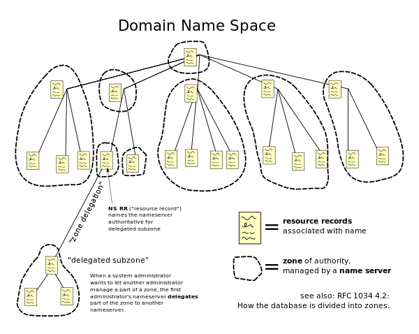

Domain Name System
| Internet protocol suite |
|---|
| Application layer |
| Transport layer |
| Internet layer |
| Link layer |
The Domain Name System (DNS) is a hierarchical and decentralized naming system for computers, services, or other resources connected to the Internet or a private network. It associates various information with domain names assigned to each of the participating entities. Most prominently, it translates more readily memorized domain names to the numerical IP addresses needed for locating and identifying computer services and devices with the underlying network protocols. By providing a worldwide, distributed directory service, the Domain Name System has been an essential component of the functionality of the Internet since 1985.
The Domain Name System delegates the responsibility of assigning domain names and mapping those names to Internet resources by designating authoritative name servers for each domain. Network administrators may delegate authority over sub-domains of their allocated name space to other name servers. This mechanism provides distributed and fault-tolerant service and was designed to avoid a single large central database.
The Domain Name System also specifies the technical functionality of the database service that is at its core. It defines the DNS protocol, a detailed specification of the data structures and data communication exchanges used in the DNS, as part of the Internet Protocol Suite.
The Internet maintains two principal namespaces, the domain name hierarchy[1] and the Internet Protocol (IP) address spaces.[2] The Domain Name System maintains the domain name hierarchy and provides translation services between it and the address spaces. Internet name servers and a communication protocol implement the Domain Name System.[3] A DNS name server is a server that stores the DNS records for a domain; a DNS name server responds with answers to queries against its database.
The most common types of records stored in the DNS database are for Start of Authority (SOA), IP addresses (A and AAAA), SMTP mail exchangers (MX), name servers (NS), pointers for reverse DNS lookups (PTR), and domain name aliases (CNAME). Although not intended to be a general purpose database, DNS has been expanded over time to store records for other types of data for either automatic lookups, such as DNSSEC records, or for human queries such as responsible person (RP) records. As a general purpose database, the DNS has also been used in combating unsolicited email (spam) by storing a real-time blackhole list (RBL). The DNS database is traditionally stored in a structured text file, the zone file, but other database systems are common.
Function
An often-used analogy to explain the Domain Name System is that it serves as the phone book for the Internet by translating human-friendly computer hostnames into IP addresses. For example, the domain name www.example.com translates to the addresses 93.184.216.34 (IPv4) and 2606:2800:220:1:248:1893:25c8:1946 (IPv6). The DNS can be quickly and transparently updated, allowing a service's location on the network to change without affecting the end users, who continue to use the same hostname. Users take advantage of this when they use meaningful Uniform Resource Locators (URLs) and e-mail addresses without having to know how the computer actually locates the services.
An important and ubiquitous function of the DNS is its central role in distributed Internet services such as cloud services and content delivery networks.[4] When a user accesses a distributed Internet service using a URL, the domain name of the URL is translated to the IP address of a server that is proximal to the user. The key functionality of the DNS exploited here is that different users can simultaneously receive different translations for the same domain name, a key point of divergence from a traditional phone-book view of the DNS. This process of using the DNS to assign proximal servers to users is key to providing faster and more reliable responses on the Internet and is widely used by most major Internet services.[5]
The DNS reflects the structure of administrative responsibility in the Internet.[6] Each subdomain is a zone of administrative autonomy delegated to a manager. For zones operated by a registry, administrative information is often complemented by the registry's RDAP and WHOIS services. That data can be used to gain insight on, and track responsibility for, a given host on the Internet.[7]
History
Using a simpler, more memorable name in place of a host's numerical address dates back to the ARPANET era. The Stanford Research Institute (now SRI International) maintained a text file named HOSTS.TXT that mapped host names to the numerical addresses of computers on the ARPANET.[8][9] Elizabeth Feinler developed and maintained the first ARPANET directory.[10][11] Maintenance of numerical addresses, called the Assigned Numbers List, was handled by Jon Postel at the University of Southern California's Information Sciences Institute (ISI), whose team worked closely with SRI.[12]
Addresses were assigned manually. Computers, including their hostnames and addresses, were added to the primary file by contacting the SRI's Network Information Center (NIC), directed by Elizabeth Feinler, by telephone during business hours.[13] Later, Feinler set up a WHOIS directory on a server in the NIC for retrieval of information about resources, contacts, and entities.[14] She and her team developed the concept of domains.[14] Feinler suggested that domains should be based on the location of the physical address of the computer.[15] Computers at educational institutions would have the domain edu, for example.[16] She and her team managed the Host Naming Registry from 1972 to 1989.[17]
By the early 1980s, maintaining a single, centralized host table had become slow and unwieldy and the emerging network required an automated naming system to address technical and personnel issues. Postel directed the task of forging a compromise between five competing proposals of solutions to Paul Mockapetris. Mockapetris instead created the Domain Name System in 1983.[13][18]
The Internet Engineering Task Force published the original specifications in RFC 882 and RFC 883 in November 1983.[19][20]
In 1984, four UC Berkeley students, Douglas Terry, Mark Painter, David Riggle, and Songnian Zhou, wrote the first Unix name server implementation for the Berkeley Internet Name Domain, commonly referred to as BIND.[21] In 1985, Kevin Dunlap of DEC substantially revised the DNS implementation. Mike Karels, Phil Almquist, and Paul Vixie have maintained BIND since then.[22] In the early 1990s, BIND was ported to the Windows NT platform.
In November 1987, RFC 1034[1] and RFC 1035[3] superseded the 1983 DNS specifications. Several additional Request for Comments have proposed extensions to the core DNS protocols.[23]
Structure
Domain name space
The domain name space consists of a tree data structure. Each node or leaf in the tree has a label and zero or more resource records (RR), which hold information associated with the domain name. The domain name itself consists of the label, concatenated with the name of its parent node on the right, separated by a dot.[24]
The tree sub-divides into zones beginning at the root zone. A DNS zone may consist of only one domain, or may consist of many domains and sub-domains, depending on the administrative choices of the zone manager. DNS can also be partitioned according to class where the separate classes can be thought of as an array of parallel namespace trees.[25]
{kind=link}
Administrative responsibility for any zone may be divided by creating additional zones. Authority over the new zone is said to be delegated to a designated name server. The parent zone ceases to be authoritative for the new zone.[25]
Domain name syntax, internationalization
The definitive descriptions of the rules for forming domain names appear in RFC 1035, RFC 1123, RFC 2181, and RFC 5892. A domain name consists of one or more parts, technically called labels, that are conventionally concatenated, and delimited by dots, such as example.com.
The right-most label conveys the top-level domain; for example, the domain name www.example.com belongs to the top-level domain com.
The hierarchy of domains descends from right to left; each label to the left specifies a subdivision, or subdomain of the domain to the right. For example, the label example specifies a subdomain of the com domain, and www is a subdomain of example.com. This tree of subdivisions may have up to 127 levels.[26]
A label may contain zero to 63 characters. The null label, of length zero, is reserved for the root zone. The full domain name may not exceed the length of 253 characters in its textual representation.[1] In the internal binary representation of the DNS the maximum length requires 255 octets of storage, as it also stores the length of the name.[3]
Although no technical limitation exists to use any character in domain name labels which are representable by an octet, hostnames use a preferred format and character set. The characters allowed in labels are a subset of the ASCII character set, consisting of characters a through z, A through Z, digits 0 through 9, and hyphen. This rule is known as the LDH rule (letters, digits, hyphen). Domain names are interpreted in case-independent manner.[27] Labels may not start or end with a hyphen.[28] An additional rule requires that top-level domain names should not be all-numeric.[28]
The limited set of ASCII characters permitted in the DNS prevented the representation of names and words of many languages in their native alphabets or scripts. To make this possible, ICANN approved the Internationalizing Domain Names in Applications (IDNA) system, by which user applications, such as web browsers, map Unicode strings into the valid DNS character set using Punycode. In 2009 ICANN approved the installation of internationalized domain name country code top-level domains (ccTLDs). In addition, many registries of the existing top-level domain names (TLDs) have adopted the IDNA system, guided by RFC 5890, RFC 5891, RFC 5892, RFC 5893.
Name servers
The Domain Name System is maintained by a distributed database system, which uses the client–server model. The nodes of this database are the name servers. Each domain has at least one authoritative DNS server that publishes information about that domain and the name servers of any domains subordinate to it. The top of the hierarchy is served by the root name servers, the servers to query when looking up (resolving) a TLD.
Authoritative name server
An authoritative name server is a name server that only gives answers to DNS queries from data that has been configured by an original source, for example, the domain administrator or by dynamic DNS methods, in contrast to answers obtained via a query to another name server that only maintains a cache of data.
An authoritative name server can either be a primary server or a secondary server. Historically the terms master/slave and primary/secondary were sometimes used interchangeably[29] but the current practice is to use the latter form. A primary server is a server that stores the original copies of all zone records. A secondary server uses a special automatic updating mechanism in the DNS protocol in communication with its primary to maintain an identical copy of the primary records.
Every DNS zone must be assigned a set of authoritative name servers. This set of servers is stored in the parent domain zone with name server (NS) records.
An authoritative server indicates its status of supplying definitive answers, deemed authoritative, by setting a protocol flag, called the "Authoritative Answer" (AA) bit in its responses.[3] This flag is usually reproduced prominently in the output of DNS administration query tools, such as dig, to indicate that the responding name server is an authority for the domain name in question.[3]
Operation
This section needs additional citations for verification. (September 2014) (Learn how and when to remove this template message) |
Address resolution mechanism
Domain name resolvers determine the domain name servers responsible for the domain name in question by a sequence of queries starting with the right-most (top-level) domain label.
{kind=link}
For proper operation of its domain name resolver, a network host is configured with an initial cache (hints) of the known addresses of the root name servers. The hints are updated periodically by an administrator by retrieving a dataset from a reliable source.
Assuming the resolver has no cached records to accelerate the process, the resolution process starts with a query to one of the root servers. In typical operation, the root servers do not answer directly, but respond with a referral to more authoritative servers, e.g., a query for "www.wikipedia.org" is referred to the org servers. The resolver now queries the servers referred to, and iteratively repeats this process until it receives an authoritative answer. The diagram illustrates this process for the host that is named by the fully qualified domain name "www.wikipedia.org".
This mechanism would place a large traffic burden on the root servers, if every resolution on the Internet required starting at the root. In practice caching is used in DNS servers to off-load the root servers, and as a result, root name servers actually are involved in only a relatively small fraction of all requests.
Recursive and caching name server
In theory, authoritative name servers are sufficient for the operation of the Internet. However, with only authoritative name servers operating, every DNS query must start with recursive queries at the root zone of the Domain Name System and each user system would have to implement resolver software capable of recursive operation.
To improve efficiency, reduce DNS traffic across the Internet, and increase performance in end-user applications, the Domain Name System supports DNS cache servers which store DNS query results for a period of time determined in the configuration (time-to-live) of the domain name record in question. Typically, such caching DNS servers also implement the recursive algorithm necessary to resolve a given name starting with the DNS root through to the authoritative name servers of the queried domain. With this function implemented in the name server, user applications gain efficiency in design and operation.
The combination of DNS caching and recursive functions in a name server is not mandatory; the functions can be implemented independently in servers for special purposes.
Internet service providers typically provide recursive and caching name servers for their customers. In addition, many home networking routers implement DNS caches and recursors to improve efficiency in the local network.
DNS resolvers
The client side of the DNS is called a DNS resolver. A resolver is responsible for initiating and sequencing the queries that ultimately lead to a full resolution (translation) of the resource sought, e.g., translation of a domain name into an IP address. DNS resolvers are classified by a variety of query methods, such as recursive, non-recursive, and iterative. A resolution process may use a combination of these methods.[1]
In a non-recursive query, a DNS resolver queries a DNS server that provides a record either for which the server is authoritative, or it provides a partial result without querying other servers. In case of a caching DNS resolver, the non-recursive query of its local DNS cache delivers a result and reduces the load on upstream DNS servers by caching DNS resource records for a period of time after an initial response from upstream DNS servers.
In a recursive query, a DNS resolver queries a single DNS server, which may in turn query other DNS servers on behalf of the requester. For example, a simple stub resolver running on a home router typically makes a recursive query to the DNS server run by the user's ISP. A recursive query is one for which the DNS server answers the query completely by querying other name servers as needed. In typical operation, a client issues a recursive query to a caching recursive DNS server, which subsequently issues non-recursive queries to determine the answer and send a single answer back to the client. The resolver, or another DNS server acting recursively on behalf of the resolver, negotiates use of recursive service using bits in the query headers. DNS servers are not required to support recursive queries.
The iterative query procedure is a process in which a DNS resolver queries a chain of one or more DNS servers. Each server refers the client to the next server in the chain, until the current server can fully resolve the request. For example, a possible resolution of www.example.com would query a global root server, then a "com" server, and finally an "example.com" server.
Circular dependencies and glue records
Name servers in delegations are identified by name, rather than by IP address. This means that a resolving name server must issue another DNS request to find out the IP address of the server to which it has been referred. If the name given in the delegation is a subdomain of the domain for which the delegation is being provided, there is a circular dependency.
In this case, the name server providing the delegation must also provide one or more IP addresses for the authoritative name server mentioned in the delegation. This information is called glue. The delegating name server provides this glue in the form of records in the additional section of the DNS response, and provides the delegation in the authority section of the response. A glue record is a combination of the name server and IP address.
For example, if the authoritative name server for example.org is ns1.example.org, a computer trying to resolve www.example.org first resolves ns1.example.org. As ns1 is contained in example.org, this requires resolving example.org first, which presents a circular dependency. To break the dependency, the name server for the top level domain org includes glue along with the delegation for example.org. The glue records are address records that provide IP addresses for ns1.example.org. The resolver uses one or more of these IP addresses to query one of the domain's authoritative servers, which allows it to complete the DNS query.
Record caching
A standard practice in implementing name resolution in applications is to reduce the load on the Domain Name System servers by caching results locally, or in intermediate resolver hosts. Results obtained from a DNS request are always associated with the time to live (TTL), an expiration time after which the results must be discarded or refreshed. The TTL is set by the administrator of the authoritative DNS server. The period of validity may vary from a few seconds to days or even weeks.
As a result of this distributed caching architecture, changes to DNS records do not propagate throughout the network immediately, but require all caches to expire and to be refreshed after the TTL. RFC 1912 conveys basic rules for determining appropriate TTL values.
Some resolvers may override TTL values, as the protocol supports caching for up to sixty-eight years or no caching at all. Negative caching, i.e. the caching of the fact of non-existence of a record, is determined by name servers authoritative for a zone which must include the Start of Authority (SOA) record when reporting no data of the requested type exists. The value of the minimum field of the SOA record and the TTL of the SOA itself is used to establish the TTL for the negative answer.
Reverse lookup
A reverse DNS lookup is a query of the DNS for domain names when the IP address is known. Multiple domain names may be associated with an IP address. The DNS stores IP addresses in the form of domain names as specially formatted names in pointer (PTR) records within the infrastructure top-level domain arpa. For IPv4, the domain is in-addr.arpa. For IPv6, the reverse lookup domain is ip6.arpa. The IP address is represented as a name in reverse-ordered octet representation for IPv4, and reverse-ordered nibble representation for IPv6.
When performing a reverse lookup, the DNS client converts the address into these formats before querying the name for a PTR record following the delegation chain as for any DNS query. For example, assuming the IPv4 address 208.80.152.2 is assigned to Wikimedia, it is represented as a DNS name in reverse order: 2.152.80.208.in-addr.arpa. When the DNS resolver gets a pointer (PTR) request, it begins by querying the root servers, which point to the servers of American Registry for Internet Numbers (ARIN) for the 208.in-addr.arpa zone. ARIN's servers delegate 152.80.208.in-addr.arpa to Wikimedia to which the resolver sends another query for 2.152.80.208.in-addr.arpa, which results in an authoritative response.
Client lookup
{kind=link}
Users generally do not communicate directly with a DNS resolver. Instead DNS resolution takes place transparently in applications such as web browsers, e-mail clients, and other Internet applications. When an application makes a request that requires a domain name lookup, such programs send a resolution request to the DNS resolver in the local operating system, which in turn handles the communications required.
The DNS resolver will almost invariably have a cache (see above) containing recent lookups. If the cache can provide the answer to the request, the resolver will return the value in the cache to the program that made the request. If the cache does not contain the answer, the resolver will send the request to one or more designated DNS servers. In the case of most home users, the Internet service provider to which the machine connects will usually supply this DNS server: such a user will either have configured that server's address manually or allowed DHCP to set it; however, where systems administrators have configured systems to use their own DNS servers, their DNS resolvers point to separately maintained name servers of the organization. In any event, the name server thus queried will follow the process outlined above, until it either successfully finds a result or does not. It then returns its results to the DNS resolver; assuming it has found a result, the resolver duly caches that result for future use, and hands the result back to the software which initiated the request.
Broken resolvers
Some large ISPs have configured their DNS servers to violate rules, such as by disobeying TTLs, or by indicating that a domain name does not exist just because one of its name servers does not respond.[30]
Some applications such as web browsers maintain an internal DNS cache to avoid repeated lookups via the network. This practice can add extra difficulty when debugging DNS issues as it obscures the history of such data. These caches typically use very short caching times on the order of one minute.[31]
Internet Explorer represents a notable exception: versions up to IE 3.x cache DNS records for 24 hours by default. Internet Explorer 4.x and later versions (up to IE 8) decrease the default timeout value to half an hour, which may be changed by modifying the default configuration.[32]
When Google Chrome detects issues with the DNS server it displays a specific error message.
Other applications
The Domain Name System includes several other functions and features.
Hostnames and IP addresses are not required to match in a one-to-one relationship. Multiple hostnames may correspond to a single IP address, which is useful in virtual hosting, in which many web sites are served from a single host. Alternatively, a single hostname may resolve to many IP addresses to facilitate fault tolerance and load distribution to multiple server instances across an enterprise or the global Internet.
DNS serves other purposes in addition to translating names to IP addresses. For instance, mail transfer agents use DNS to find the best mail server to deliver e-mail: An MX record provides a mapping between a domain and a mail exchanger; this can provide an additional layer of fault tolerance and load distribution.
The DNS is used for efficient storage and distribution of IP addresses of blacklisted email hosts. A common method is to place the IP address of the subject host into the sub-domain of a higher level domain name, and to resolve that name to a record that indicates a positive or a negative indication.
For example:
- The address 102.3.4.5 is blacklisted. It points to 5.4.3.102.blacklist.example, which resolves to 127.0.0.1.
- The address 102.3.4.6 is not blacklisted and points to 6.4.3.102.blacklist.example. This hostname is either not configured, or resolves to 127.0.0.2.
E-mail servers can query blacklist.example to find out if a specific host connecting to them is in the blacklist. Many of such blacklists, either subscription-based or free of cost, are available for use by email administrators and anti-spam software.
To provide resilience in the event of computer or network failure, multiple DNS servers are usually provided for coverage of each domain. At the top level of global DNS, thirteen groups of root name servers exist, with additional "copies" of them distributed worldwide via anycast addressing.
Dynamic DNS (DDNS) updates a DNS server with a client IP address on-the-fly, for example, when moving between ISPs or mobile hot spots, or when the IP address changes administratively.
DNS message format
The DNS protocol uses two types of DNS messages, queries and replies; both have the same format. Each message consists of a header and four sections: question, answer, authority, and an additional space. A header field (flags) controls the content of these four sections.[1]
The header section consists of the following fields: Identification, Flags, Number of questions, Number of answers, Number of authority resource records (RRs), and Number of additional RRs. Each field is 16 bits long, and appears in the order given. The identification field is used to match responses with queries. The flag field consists of sub-fields as follows:
| Field | Description | Length (bits) |
|---|---|---|
| QR | Indicates if the message is a query (0) or a reply (1) | 1 |
| OPCODE | The type can be QUERY (standard query, 0), IQUERY (inverse query, 1), or STATUS (server status request, 2) | 4 |
| AA | Authoritative Answer, in a response, indicates if the DNS server is authoritative for the queried hostname | 1 |
| TC | TrunCation, indicates that this message was truncated due to excessive length | 1 |
| RD | Recursion Desired, indicates if the client means a recursive query | 1 |
| RA | Recursion Available, in a response, indicates if the replying DNS server supports recursion | 1 |
| Z | Zero, reserved for future use | 3 |
| RCODE | Response code, can be NOERROR (0), FORMERR (1, Format error), SERVFAIL (2), NXDOMAIN (3, Nonexistent domain), etc.[33] | 4 |
After the flag, the header ends with four 16-bit integers which contain the number of records in each of the sections that follow, in the same order.
Question section
The question section has a simpler format than the resource record format used in the other sections. Each question record (there is usually just one in the section) contains the following fields:
| Field | Description | Length (octets) |
|---|---|---|
| NAME | Name of the requested resource | Variable |
| TYPE | Type of RR (A, AAAA, MX, TXT, etc.) | 2 |
| CLASS | Class code | 2 |
The domain name is broken into discrete labels which are concatenated; each label is prefixed by the length of that label.[34]
DNS protocol transport
DNS primarily uses the User Datagram Protocol (UDP) on port number 53 to serve requests.[3] DNS queries consist of a single UDP request from the client followed by a single UDP reply from the server. When the length of the answer exceeds 512 bytes and both client and server support Extension Mechanisms for DNS (EDNS), larger UDP packets are used. Otherwise, the query is sent again using the Transmission Control Protocol (TCP). TCP is also used for tasks such as zone transfers. Some resolver implementations use TCP for all queries.
Resource records
The Domain Name System specifies a database of information elements for network resources. The types of information elements are categorized and organized with a list of DNS record types, the resource records (RRs). Each record has a type (name and number), an expiration time (time to live), a class, and type-specific data. Resource records of the same type are described as a resource record set (RRset), having no special ordering. DNS resolvers return the entire set upon query, but servers may implement round-robin ordering to achieve load balancing. In contrast, the Domain Name System Security Extensions (DNSSEC) work on the complete set of resource record in canonical order.
When sent over an Internet Protocol network, all records use the common format specified in RFC 1035:[35]
| Field | Description | Length (octets) |
|---|---|---|
| NAME | Name of the node to which this record pertains | Variable |
| TYPE | Type of RR in numeric form (e.g., 15 for MX RRs) | 2 |
| CLASS | Class code | 2 |
| TTL | Count of seconds that the RR stays valid (The maximum is 231−1, which is about 68 years) | 4 |
| RDLENGTH | Length of RDATA field (specified in octets) | 2 |
| RDATA | Additional RR-specific data | Variable, as per RDLENGTH |
NAME is the fully qualified domain name of the node in the tree[clarification needed]. On the wire, the name may be shortened using label compression where ends of domain names mentioned earlier in the packet can be substituted for the end of the current domain name.
TYPE is the record type. It indicates the format of the data and it gives a hint of its intended use. For example, the A record is used to translate from a domain name to an IPv4 address, the NS record lists which name servers can answer lookups on a DNS zone, and the MX record specifies the mail server used to handle mail for a domain specified in an e-mail address.
RDATA is data of type-specific relevance, such as the IP address for address records, or the priority and hostname for MX records. Well known record types may use label compression in the RDATA field, but "unknown" record types must not (RFC 3597).
The CLASS of a record is set to IN (for Internet) for common DNS records involving Internet hostnames, servers, or IP addresses. In addition, the classes Chaos (CH) and Hesiod (HS) exist.[36] Each class is an independent name space with potentially different delegations of DNS zones.
In addition to resource records defined in a zone file, the domain name system also defines several request types that are used only in communication with other DNS nodes (on the wire), such as when performing zone transfers (AXFR/IXFR) or for EDNS (OPT).
Wildcard DNS records
The domain name system supports wildcard DNS records which specify names that start with the asterisk label, '*', e.g., *.example.[1][37] DNS records belonging to wildcard domain names specify rules for generating resource records within a single DNS zone by substituting whole labels with matching components of the query name, including any specified descendants. For example, in the following configuration, the DNS zone x.example specifies that all subdomains, including subdomains of subdomains, of x.example use the mail exchanger (MX) a.x.example. The A record for a.x.example is needed to specify the mail exchanger IP address. As this has the result of excluding this domain name and its subdomains from the wildcard matches, an additional MX record for the subdomain a.x.example, as well as a wildcarded MX record for all of its subdomains, must also be defined in the DNS zone.
x.example. MX 10 a.x.example. *.x.example. MX 10 a.x.example. *.a.x.example. MX 10 a.x.example. a.x.example. MX 10 a.x.example. a.x.example. AAAA 2001:db8::1
The role of wildcard records was refined in RFC 4592, because the original definition in RFC 1034 was incomplete and resulted in misinterpretations by implementers.[37]
Protocol extensions
The original DNS protocol had limited provisions for extension with new features. In 1999, Paul Vixie published in RFC 2671 (superseded by RFC 6891) an extension mechanism, called Extension Mechanisms for DNS (EDNS) that introduced optional protocol elements without increasing overhead when not in use. This was accomplished through the OPT pseudo-resource record that only exists in wire transmissions of the protocol, but not in any zone files. Initial extensions were also suggested (EDNS0), such as increasing the DNS message size in UDP datagrams.
Dynamic zone updates
Dynamic DNS updates use the UPDATE DNS opcode to add or remove resource records dynamically from a zone database maintained on an authoritative DNS server. The feature is described in RFC 2136. This facility is useful to register network clients into the DNS when they boot or become otherwise available on the network. As a booting client may be assigned a different IP address each time from a DHCP server, it is not possible to provide static DNS assignments for such clients.
Security issues
Originally, security concerns were not major design considerations for DNS software or any software for deployment on the early Internet, as the network was not open for participation by the general public. However, the expansion of the Internet into the commercial sector in the 1990s changed the requirements for security measures to protect data integrity and user authentication.
Several vulnerability issues were discovered and exploited by malicious users. One such issue is DNS cache poisoning, in which data is distributed to caching resolvers under the pretense of being an authoritative origin server, thereby polluting the data store with potentially false information and long expiration times (time-to-live). Subsequently, legitimate application requests may be redirected to network hosts operated with malicious intent.
DNS responses traditionally do not have a cryptographic signature, leading to many attack possibilities; the Domain Name System Security Extensions (DNSSEC) modify DNS to add support for cryptographically signed responses. DNSCurve has been proposed as an alternative to DNSSEC. Other extensions, such as TSIG, add support for cryptographic authentication between trusted peers and are commonly used to authorize zone transfer or dynamic update operations.
Some domain names may be used to achieve spoofing effects. For example, paypal.com and paypa1.com are different names, yet users may be unable to distinguish them in a graphical user interface depending on the user's chosen typeface. In many fonts the letter l and the numeral 1 look very similar or even identical. This problem is acute in systems that support internationalized domain names, as many character codes in ISO 10646 may appear identical on typical computer screens. This vulnerability is occasionally exploited in phishing.[38]
Techniques such as forward-confirmed reverse DNS can also be used to help validate DNS results.
DNS can also "leak" from otherwise secure or private connections, if attention is not paid to their configuration, and at times DNS has been used to bypass firewalls by malicious persons, and exfiltrate data, since it is often seen as innocuous.
Privacy and tracking issues
Originally designed as a public, hierarchical, distributed and heavily cached database, DNS protocol has no confidentiality controls. User queries and nameserver responses are being sent unencrypted which enables network packet sniffing, DNS hijacking, DNS cache poisoning and man-in-the-middle attacks. This deficiency is commonly used by cybercriminals and network operators for marketing purposes, user authentication on captive portals and censorship.[39]
User privacy is further exposed by proposals for increasing the level of client IP information in DNS queries (RFC 7871) for the benefit of Content Delivery Networks.
The main approaches that are in use to counter privacy issues with DNS:
- VPNs, which move DNS resolution to the VPN operator and hide user traffic from local ISP,
- Tor, which replaces traditional DNS resolution with anonymous .onion domains, hiding both name resolution and user traffic behind onion routing counter-surveillance,
- Proxies and public DNS servers, which move the actual DNS resolution to a third-party provider, who usually promises little or no request logging and optional added features, such as DNS-level advertisement or pornography blocking.
- Public DNS servers can be queried using traditional DNS protocol, in which case they provide no protection from local surveillance, or DNS-over-HTTPS, DNS-over-TLS and DNSCrypt, which do provide such protection
Solutions preventing DNS inspection by local network operator are criticized for thwarting corporate network security policies and Internet censorship. They are also criticized from privacy point of view, as giving away the DNS resolution to the hands of a small number of companies known for monetizing user traffic and for centralizing DNS name resolution, which is generally perceived as harmful for the Internet.[39]
Google is the dominant provider of the platform in Android, the browser in Chrome, and the DNS resolver in the 8.8.8.8 service. Would this scenario be a case of a single corporate entity being in a position of overarching control of the entire namespace of the Internet? Netflix already fielded an app that used its own DNS resolution mechanism independent of the platform upon which the app was running. What if the Facebook app included DoH? What if Apple’s iOS used a DoH-resolution mecha-nism to bypass local DNS resolution and steer all DNS queries from Apple’s platforms to a set of Apple-operated name resolvers?
— DNS Privacy and the IETF
Domain name registration
The right to use a domain name is delegated by domain name registrars which are accredited by the Internet Corporation for Assigned Names and Numbers (ICANN) or other organizations such as OpenNIC, that are charged with overseeing the name and number systems of the Internet. In addition to ICANN, each top-level domain (TLD) is maintained and serviced technically by an administrative organization, operating a registry. A registry is responsible for operating the database of names within its authoritative zone, although the term is most often used for TLDs. A registrant is a person or organization who asked for domain registration.[23] The registry receives registration information from each domain name registrar, which is authorized (accredited) to assign names in the corresponding zone and publishes the information using the WHOIS protocol. As of 2015, usage of RDAP is being considered.[40]
ICANN publishes the complete list of TLDs, TLD registries, and domain name registrars. Registrant information associated with domain names is maintained in an online database accessible with the WHOIS service. For most of the more than 290 country code top-level domains (ccTLDs), the domain registries maintain the WHOIS (Registrant, name servers, expiration dates, etc.) information. For instance, DENIC, Germany NIC, holds the DE domain data. From about 2001, most Generic top-level domain (gTLD) registries have adopted this so-called thick registry approach, i.e. keeping the WHOIS data in central registries instead of registrar databases.
For top-level domains on COM and NET, a thin registry model is used. The domain registry (e.g., GoDaddy, BigRock and PDR, VeriSign, etc., etc.) holds basic WHOIS data (i.e., registrar and name servers, etc.). Organizations, or registrants using ORG on the other hand, are on the Public Interest Registry exclusively.
Some domain name registries, often called network information centers (NIC), also function as registrars to end-users, in addition to providing access to the WHOIS datasets. The top-level domain registries, such as for the domains COM, NET, and ORG use a registry-registrar model consisting of many domain name registrars.[41] In this method of management, the registry only manages the domain name database and the relationship with the registrars. The registrants (users of a domain name) are customers of the registrar, in some cases through additional subcontracting of resellers.
RFC documents
Standards
The Domain Name System is defined by Request for Comments (RFC) documents published by the Internet Engineering Task Force (Internet standards). The following is a list of RFCs that define the DNS protocol.
- RFC 1034, Domain Names - Concepts and Facilities
- RFC 1035, Domain Names - Implementation and Specification
- RFC 1123, Requirements for Internet Hosts—Application and Support
- RFC 1995, Incremental Zone Transfer in DNS
- RFC 1996, A Mechanism for Prompt Notification of Zone Changes (DNS NOTIFY)
- RFC 2136, Dynamic Updates in the domain name system (DNS UPDATE)
- RFC 2181, Clarifications to the DNS Specification
- RFC 2308, Negative Caching of DNS Queries (DNS NCACHE)
- RFC 2672, Non-Terminal DNS Name Redirection
- RFC 2845, Secret Key Transaction Authentication for DNS (TSIG)
- RFC 3225, Indicating Resolver Support of DNSSEC
- RFC 3226, DNSSEC and IPv6 A6 aware server/resolver message size requirements
- RFC 3596, DNS Extensions to Support IP Version 6
- RFC 3597, Handling of Unknown DNS Resource Record (RR) Types
- RFC 4343, Domain Name System (DNS) Case Insensitivity Clarification
- RFC 4592, The Role of Wildcards in the Domain Name System
- RFC 4635, HMAC SHA TSIG Algorithm Identifiers
- RFC 5001, DNS Name Server Identifier (NSID) Option
- RFC 5011, Automated Updates of DNS Security (DNSSEC) Trust Anchors
- RFC 5452, Measures for Making DNS More Resilient against Forged Answers
- RFC 5890, Internationalized Domain Names for Applications (IDNA):Definitions and Document Framework
- RFC 5891, Internationalized Domain Names in Applications (IDNA): Protocol
- RFC 5892, The Unicode Code Points and Internationalized Domain Names for Applications (IDNA)
- RFC 5893, Right-to-Left Scripts for Internationalized Domain Names for Applications (IDNA)
- RFC 6891, Extension Mechanisms for DNS (EDNS0)
- RFC 7766, DNS Transport over TCP - Implementation Requirements
Proposed security standards
- RFC 4033, DNS Security Introduction and Requirements
- RFC 4034, Resource Records for the DNS Security Extensions
- RFC 4035, Protocol Modifications for the DNS Security Extensions
- RFC 4509, Use of SHA-256 in DNSSEC Delegation Signer (DS) Resource Records
- RFC 4470, Minimally Covering NSEC Records and DNSSEC On-line Signing
- RFC 5155, DNS Security (DNSSEC) Hashed Authenticated Denial of Existence
- RFC 5702, Use of SHA-2 Algorithms with RSA in DNSKEY and RRSIG Resource Records for DNSSEC
- RFC 5910, Domain Name System (DNS) Security Extensions Mapping for the Extensible Provisioning Protocol (EPP)
- RFC 5933, Use of GOST Signature Algorithms in DNSKEY and RRSIG Resource Records for DNSSEC
- RFC 7830, The EDNS(0) Padding Option
- RFC 7858, Specification for DNS over Transport Layer Security (TLS)
- RFC 8310, Usage Profiles for DNS over TLS and DNS over DTLS
- RFC 8484, DNS Queries over HTTPS (DoH)
Experimental RFCs
- RFC 1183, New DNS RR Definitions
Best Current Practices
- RFC 2182, Selection and Operation of Secondary DNS Servers (BCP 16)
- RFC 2317, Classless IN-ADDR.ARPA delegation (BCP 20)
- RFC 5625, DNS Proxy Implementation Guidelines (BCP 152)
- RFC 6895, Domain Name System (DNS) IANA Considerations (BCP 42)
- RFC 7720, DNS Root Name Service Protocol and Deployment Requirements (BCP 40)
Informational RFCs
These RFCs are advisory in nature, but may provide useful information despite defining neither a standard or BCP. (RFC 1796)
- RFC 1178, Choosing a Name for Your Computer (FYI 5)
- RFC 1591, Domain Name System Structure and Delegation
- RFC 1912, Common DNS Operational and Configuration Errors
- RFC 2100, The Naming of Hosts
- RFC 3696, Application Techniques for Checking and Transformation of Names
- RFC 3833. Threat Analysis of the Domain Name System (DNS)
- RFC 4892, Requirements for a Mechanism Identifying a Name Server Instance
- RFC 5894, Internationalized Domain Names for Applications (IDNA):Background, Explanation, and Rationale
- RFC 5895, Mapping Characters for Internationalized Domain Names in Applications (IDNA) 2008
- RFC 7626, DNS Privacy Considerations
- RFC 7706, Decreasing Access Time to Root Servers by Running One on Loopback
- RFC 8499, DNS Terminology
Unknown
These RFCs have an official status of Unknown, but due to their age are not clearly labeled as such.
- RFC 920, Domain Requirements – Specified original top-level domains
- RFC 1032, Domain Administrators Guide
- RFC 1033, Domain Administrators Operations Guide
- RFC 1101, DNS Encodings of Network Names and Other Types
See also
- Alternative DNS root
- Comparison of DNS server software
- Domain hijacking
- DNS hijacking
- DNS management software
- DNS over HTTPS
- DNS over TLS
- Hierarchical namespace
- IPv6 brokenness and DNS whitelisting
- Multicast DNS
- Public recursive name server
- resolv.conf
- Split-horizon DNS
- List of DNS record types
- List of managed DNS providers
- Zone file
- DNS leak
References
- ^ a b c d e f RFC 1034, Domain Names - Concepts and Facilities, P. Mockapetris, The Internet Society (November 1987)
- ^ RFC 781, Internet Protocol - DARPA Internet Program Protocol Specification, Information Sciences Institute, J. Postel (Ed.), The Internet Society (September 1981)
- ^ a b c d e f RFC 1035, Domain Names - Implementation and Specification, P. Mockapetris, The Internet Society (November 1987)
- ^ J. Dilley, B. Maggs, J. Parikh, H. Prokop, R. Sitaraman, and B. Weihl. "Globally Distributed Content Delivery, IEEE Internet Computing, September/October 2002, pp. 50-58" (PDF).
- ^ Nygren., E.; Sitaraman R. K.; Sun, J. (2010). "The Akamai Network: A Platform for High-Performance Internet Applications" (PDF). ACM SIGOPS Operating Systems Review. 44 (3): 2–19. doi:10.1145/1842733.1842736. S2CID 207181702. Retrieved November 19, 2012.
- ^ Paul Mockapetris (November 1987). "SOA RDATA format". Domain Names - Implementation and Specification. IETF. sec. 3.3.13. doi:10.17487/RFC1035. RFC 1035. Retrieved 18 December 2015.
- ^ Champika Wijayatunga (February 2015). "DNS Abuse Handling" (PDF). APNIC. Retrieved 18 December 2016.
- ^ RFC 3467, "Role of the Domain Name System (DNS)", J.C. Klensin, J. Klensin (February 2003).
- ^ Liu, Cricket; Albitz, Paul (2006). DNS and BIND (5th ed.). O'Reilly Media. p. 3. ISBN 978-0-596-10057-5.
- ^ Evans 2018, p. 112.
- ^ Evans 2018, p. 113.
- ^ IEEE Annals [3B2-9] man2011030074.3d 29/7/011 11:54 Page 74
- ^ a b "Why Does the Net Still Work on Christmas? Paul Mockapetris - Internet Hall of Fame". internethalloffame.org.
- ^ a b Evans 2018, p. 119.
- ^ Evans 2018, p. 120.
- ^ Evans 2018, p. 120–121.
- ^ "Elizabeth Feinler". Internet Hall of Fame. Archived from the original on 14 September 2018. Retrieved 2018-11-25.
- ^ "Paul Mockapetris | Internet Hall of Fame". internethalloffame.org. Retrieved 2020-02-12.
- ^ Andrei Robachevsky (26 November 2013). "Happy 30th Birthday, DNS!". Internet Society. Retrieved 18 December 2015.
- ^ Elizabeth Feinler, IEEE Annals, 3B2-9 man2011030074.3d 29/7/011 11:54 Page 74
- ^ Terry, Douglas B.; et al. (June 12–15, 1984). "The Berkeley Internet Name Domain Server". Summer Conference, Salt Lake City 1984: Proceedings. USENIX Association Software Tools Users Group. pp. 23–31.
- ^ Internet Systems Consortium. "The Most Widely Used Name Server Software: BIND". History of BIND. Retrieved 28 July 2013.
- ^ a b Paul Hoffman; Andrew Sullivan; Kazunori Fujiwara (December 2015). DNS Terminology. IETF. doi:10.17487/RFC7719. RFC 7719. Retrieved 18 December 2015.
- ^ Paul Mockapetris (November 1987). "Name space specifications and terminology". Domain Names - Domain Concepts and Facilities. IETF. sec. 3.1. doi:10.17487/RFC1034. RFC 1034. Retrieved 17 December 2015.
- ^ a b Paul Mockapetris (November 1987). "How the database is divided into zones". Domain Names - Domain Concepts and Facilities. IETF. sec. 4.2. doi:10.17487/RFC1034. RFC 1034. Retrieved 17 December 2015.
- ^ Lindsay, David (2007). International Domain Name Law: ICANN and the UDRP. Bloomsbury Publishing. p. 8. ISBN 978-1-84113-584-7.
- ^ Network Working Group of the IETF, January 2006, RFC 4343: Domain Name System (DNS) Case Insensitivity Clarification
- ^ a b RFC 3696, Application Techniques for Checking and Transformation of Names, J. Klensin
- ^ Fujiwara, Kazunori; Sullivan, Andrew; Hoffman, Paul. "DNS Terminology". tools.ietf.org. Retrieved 2020-06-21.
- ^ "Providers ignoring DNS TTL?". Slashdot. 2005. Retrieved 2012-04-07.
- ^ Ben Anderson (7 September 2011). "Ben Anderson: Why Web Browser DNS Caching Can Be A Bad Thing". Retrieved 20 October 2014.
- ^ "How Internet Explorer uses the cache for DNS host entries". Microsoft Corporation. 2004. Retrieved 2010-07-25.
- ^ "Domain Name System (DNS) Parameters". IANA. DNS RCODEs. Retrieved 14 June 2019.
- ^ James F. Kurose and Keith W. Ross, Computer Networking: A Top-Down Approach, 6th ed. Essex, England: Pearson Educ. Limited, 2012
- ^ RFC 5395, Domain Name System (DNS) IANA Considerations, D. Eastlake 3rd (November 2008), Section 3
- ^ RFC 5395, Domain Name System (DNS) IANA Considerations, D. Eastlake 3rd (November 2008), p. 11
- ^ a b RFC 4592, The Role of Wildcards in the Domain Name System, E. Lewis (July 2006)
- ^ APWG. "Global Phishing Survey: Domain Name Use and Trends in 1H2010." 10/15/2010 apwg.org Archived 2012-10-03 at the Wayback Machine
- ^ a b Huston, Geoff (July 2019). "DNS Privacy and the IETF" (PDF). The Internet Protocol Journal.
- ^ "Registration Data Access Protocol (RDAP) Operational Profile for gTLD Registries and Registrars". ICANN. 3 December 2015. Archived from the original on 22 December 2015. Retrieved 18 December 2015.
- ^ "Find a Registrar". VeriSign, Inc. Retrieved 18 December 2015.
Sources
- Evans, Claire L. (2018). Broad Band: The Untold Story of the Women Who Made the Internet. New York: Portfolio/Penguin. ISBN 9780735211759.
External links
| Wikiversity has learning resources about Domain Name System |
- Vixie, Paul (2007-04-01). "DNS Complexity". ACM Queue. Archived from the original on 2007-06-10.
- Zytrax.com, Open Source Guide – DNS for Rocket Scientists.
- Internet Governance and the Domain Name System: Issues for Congress Congressional Research Service
- Ball, James (28 February 2014). "Meet the seven people who hold the keys to worldwide internet security". The Guardian. Guardian News & Media Limited. Retrieved 28 February 2014.